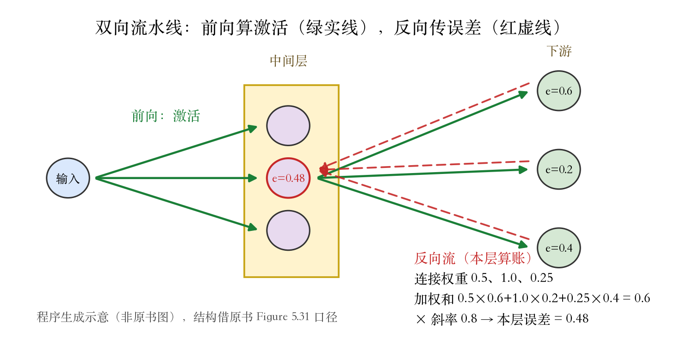

第 5 章 · 反向传播
反向传播：梯度从哪来
上一集：损失函数与梯度下降。
顶层梯度：预测减目标。
中间层的梯度还没有着落。
误差从顶层出发，一层层往回传。
依据：原书第 285 页
本集路线
误差定义
三站求导
误差回传
工程与移交
正课第三十六集
01 / 9
核心图景 · 误差回传
先看一眼核心图景
原书 Figure 5.31：中间层误差回传。
顶层误差按连接权重加权汇总。
一路传到中间层每个单元。
图不复制，只用语言描述。
依据：原书第 285 页
三条路
损失→误差
误差→权重梯度
误差→上一层
正课第三十六集
02 / 9
第一站 · 误差定义
第一站：给误差一个名字
式 5.65：损失对加权和求偏导。
这个量叫误差，记作 e。
再乘激活函数在这一点的斜率。
斜率小，误差传得就弱。
依据：原书第 286 页
eᵢ = ∂Eₙ/∂sᵢ = (∂Eₙ/∂yᵢ)·h′(sᵢ)
s：加权和；y：单元输出；h′：激活函数斜率
正课第三十六集
03 / 9
第二、三站 · 权重、偏置、输入
第二、三站：三种导数
式 5.66：权重梯度 = 输入 × 误差。
输入为零或误差为零，梯度就是零。
式 5.67：偏置梯度就是误差。
式 5.68：输入梯度 = 权重 × 误差。
依据：原书第 286 页
三站结果
权重：输入×误差
偏置：误差本身
输入：权重×误差
正课第三十六集
04 / 9
误差回传 · 递归
误差从下游来
单元的输出，就是后面单元的输入。
式 5.69：下游各误差按权重求和。
式 5.70：再乘本单元激活斜率。
前向算激活，反向传误差。
依据：原书第 286 页
eᵢ = h′(sᵢ) Σ wₖᵢ eₖ
k 跑遍下游单元：先加权求和，再乘本单元斜率
正课第三十六集
05 / 9
实验 · 双向流水线
看图：一道双向流水线
中间层三个单元，接下游三条路。
下游误差 0.6、0.2、0.4，权重 0.5、1.0、0.25。
加权和 0.6，乘斜率 0.8，本层误差 0.48。
图是程序生成的，不是原书 Figure 5.31。
依据：本集实验；原书第 286 页

前向激活与反向误差：焦点单元收三条下游误差｜程序生成，未用教材或论文原图
正课第三十六集
06 / 9
直觉 · 赫布法则
直觉：误差为什么变小
单元误差取决于下游误差乘连接权重。
激活斜率在这里起调制作用。
输出被钳在零或很小，误差就小。
权重梯度 = 输入 × 误差，和赫布法则相通。
依据：原书第 286–287 页
两个后果
死单元：梯度断流
一起激活：连接加强
有信号、有误差才学习
正课第三十六集
07 / 9
递归链式法则 · 梯度检查点
同一套流程，与省内存的做法
卷积、池化也走同一套链式法则。
递归求导，直到拿到全部参数的梯度。
训练要存前向激活，显存吃紧。
梯度检查点：只存部分层，其余重算。
依据：原书第 287 页
名字的梗
存的是激活
不是梯度
用时间换空间
正课第三十六集
08 / 9
收束 · 下一集训练与优化
零件齐了，交给训练
结构、激活、正则、损失、初始化都定了。
梯度也算出来了。
还差一个把梯度变成权重更新的算法。
下一集：训练与优化。
依据：原书第 287 页
两道作业
手算一个权重梯度
数值差分对解析梯度
近零梯度看绝对误差
正课第三十六集
09 / 9